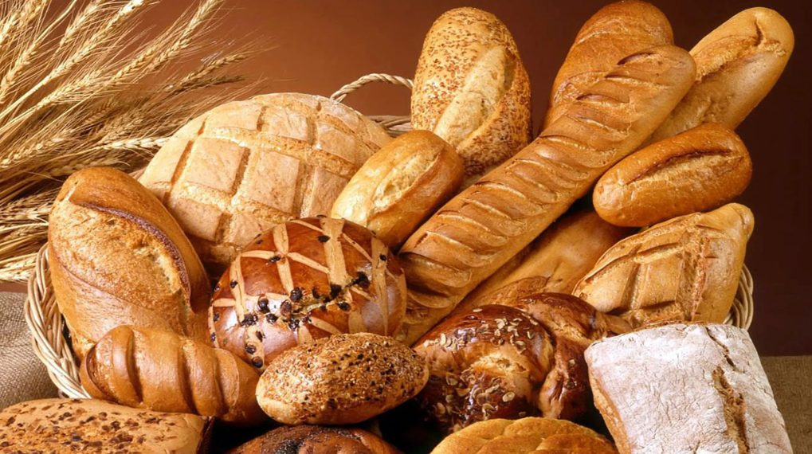

Pan recién horneado, a un clic de tu mesa
Elige tus panes, pasteles y salados favoritos desde el catálogo virtual y recógelos listos en tienda, sin colas ni esperas.

100% artesanalEncuentra lo que se te antoja
Cargando…
Tu pedido en seis pasos
Inicia sesión
Toca el ícono de persona arriba a la derecha e ingresa tu correo y contraseña. Si no tienes cuenta, elige Registrarse.
Entra al catálogo
Ya con tu sesión iniciada, abre el catálogo para ver todos los productos.
Busca y agrega
Busca por nombre o por categoría y presiona el botón + para añadir cada producto a tu pedido.
Define tu código secreto
Escribe tres letras: las necesitarás para recibir tu pedido. No las olvides.
Elige cómo recibirlo
Virtual para recoger en tienda, Delivery a tu casa o Personalizado para pedidos grandes.
Confirma tu compra
Revisa el total y confirma. Desde Ver Historial puedes volver a consultar tu código.
Nuestro catálogo completo
Cargando…
Un rincón de barrio hecho con cariño
La Panadería Luz Mayra nació en Collique, Comas, con la idea de ofrecer pan fresco y de calidad a los vecinos de la zona. Con los años sumamos pasteles, salados y productos de primera necesidad, convirtiéndonos en un punto de encuentro confiable para la comunidad.
Hoy damos un paso más: llevar esa misma calidez a un catálogo digital, para que pedir tu pan de cada día sea tan fácil como hornearlo.
¿Listo para hacer tu pedido?
Explora el catálogo completo y recoge tu pan sin esperar en la cola.
Ver catálogo completo